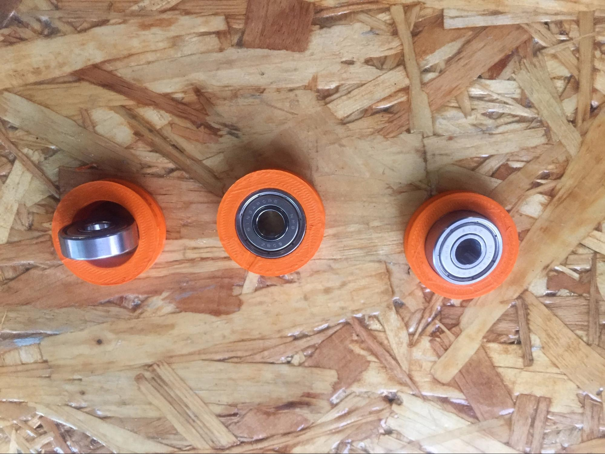
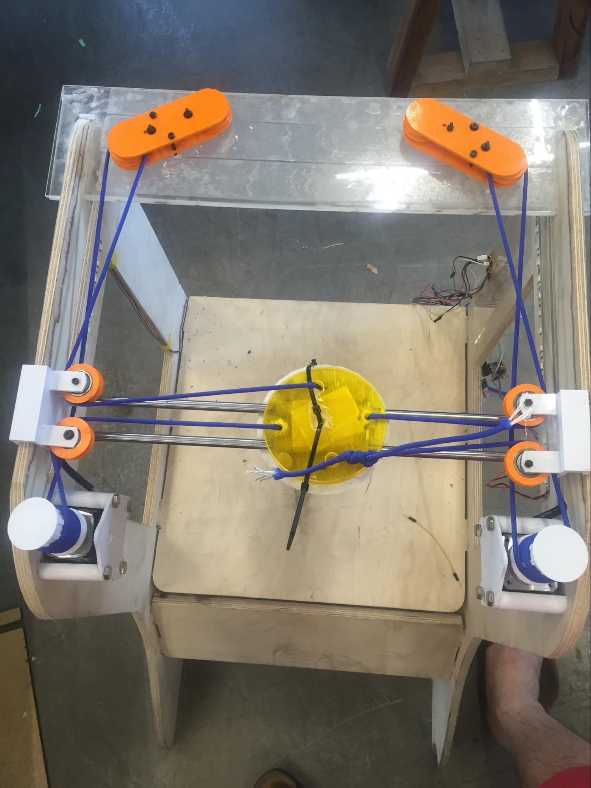
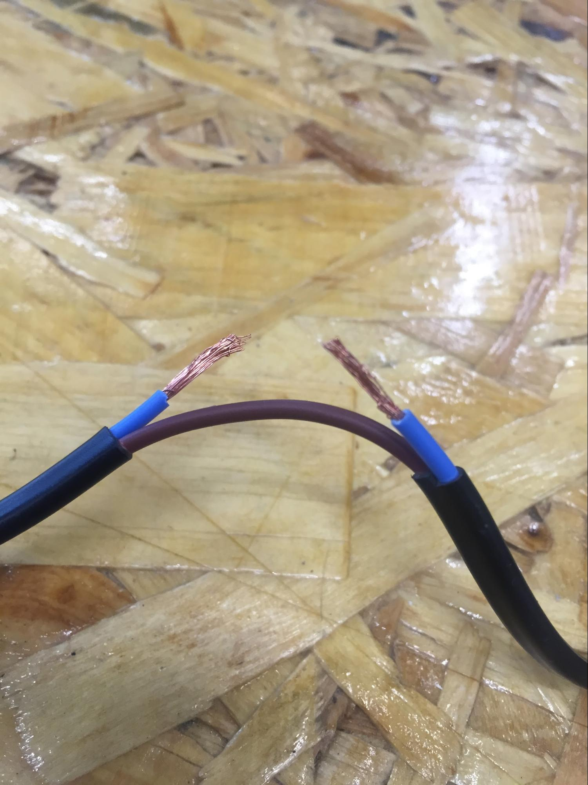

SELFIE-YOUR-WATIE
Start with a small thing to build much more bigger thing. There are many things i wanted to learn such as bluetooth module, remote control, wireless network. By thinking thoroughly and looking at the toy crane which i normally see around the theatre’s game zone I thought maybe controlling certain thing from one to the other point is very important It started from the idea of toy crane which is an entertainment game box for fun.
Reason why I’m trying to build this thing is because I get to control in all directions. like 3D printer. Obviously i need a lot of work done with controlling the stepper motor to move in the direction that i want. My main goal is to make machine move around in XYZ axes to do certain things
Project development
As a matter of fact, I tend to re-use the thing i built from CNC project
 |
Requirement for my project
Final Project to do list
|
START MAKING !
Main electronics using FabKit I need to control the board with my redesigned board. before the assembly actually start I made sure that the digital pinouts have no problems and it was ready to go.
 |
||
FABISP CONNECTING |
BOOTLOADING FABKIT |
TESTING STEPPER MOTOR |
3D modeling the parts
As i wasn’t making the modeling parts when i was doing assignments i had to make the new parts model in the reference of last year Fab Academy student ‘Robert Garita’ who used Core XY module for his final project. As i have mentioned earlier my main goal is to control from one position to one position I think I can handle it. What I didn’t thought was how much of an importance these one component have.
 |
 |
 |
BEARING TOLERANCE TEST |
MIDDLE (0.3mm) THE BEST FIT |
SIDE PART IN PLACE |
With the bearing I bought, I did some 3D modeling of the bearing to make the stiffness to make components together. I also did trial with the rod and made sure rod can be easily movable and made tolerance 0.4mm on each radius for easy slide movement.
LEVELING WITH STEPPER MOTOR |
LEVELING WITH BACK PART |
CHEKCING LEVEL |
The thing is that at the first beginning I only managed to make the same height with only three bearings. the picture in the middle shows the added module for the back part. I thought of an easy-quick tool and I made quickly with acrylic.
 |
||
BACK PART ACRYLIC CUT |
ACRYLICT CUT PART TEST |
FIXING THE BOTTOM PART |
Because the acrylic was very thin(1.5T) and the mechanism needs stronger force I cut 8 pieces and with strong adhesive I glued them together. The back of the part are not fixed with any screws just the press-fit of acrylic and the wood which was just the temporary position. When the stepper motor was powered the back part couldn't stand.
LASER CUTTING ACRYLIC BACK PART |
WITH HOLES INCLUDED |
FIRST BEARING |
FIXING ELASTIC BAND WITH STAPLE |
ENHANCED BEARING FOR MORE FORCE |
BOTTOM PART WITH BEARINGS |
SIDEPART FROM TOP VIEW |
SIDE PART RE DESIGNED FOR USE |
Looking at the datasheet of stepper motors what i have here is the 6 wires but as shown above I don’t need two of the wires(black & white). The com(A), com(B) doesn’t need to be wired and by the recommendation of the store manager I was influenced by the fact that it’s more powerful. The 3D printed ouput is re-designed to make the bottom part to hold the motor vertically.
CORE X-Y MECHANISM WITH ROPES |
ROPES LEVELING WITH TIGHTENED MOTOR |
CROSSING ROPES BETWEEN BEARINGS |
The bearings on the left is my first prototype, as i got along with the product I had talking with the instructor and It wasn’t giving much force to other bearings. So best way to fix the problem is to make couple of more wires to tangle around so it is more fixed.
3D printing was what I had spend too much time on it. It was a disaster since the other printers were not in good state. Maybe it was better to only focus on only one machine and let the other stuff to be finished. I've used all the machines in FabLab Seoul and mostly all of my parts are infilled with more than 20% and especailly for the gear I put the infill of 50% to make it strong
 |
||
BEARING WITH ACRYLIC PROTECTOR |
BEARING WITH TEST |
QUICK DESIGN OF BACK PART(AutoCAD) |
I had to do some handwork with spare acrylic since there needed some adjustment to withstand the force. Therefore I needed all the M3 bolts and screws to make parts together which i had no choice. The parts cannot be glued together and now many of my parts are using bolt and screws.
After all the quick wiring and rope tightening I had tested manually by turning motors by hand, but before the problem happened with the ropes. Another problem was that the back of the part was moving. What I mean is the back part where the two bearings are holding the force the stepper motors are giving it to the bearings are so strong that I just bent the wood of the side-frame. This problem leads to the problem which the bearings don’t get fixed and the tension of the ropes are not stable. That’s when I quickly designed the frame for back positioning. It’s made for a purpose of holding the side frame with reliable distance and to fix the double bearings steady.
LOTS OF STRUGGLING STEPS
-
3D model parts not showing the equal output as I intended.
-
Finding what causes the problem? Right material( changed from elastic band, normal string blue wire and finally with the shoestring. Now I know with correct material it saves a whole lot of time
-
Bearings !!! Main reason why my final project took more times than I expected.
Components are very stuck to the platform and doesn’t slide well, the ropes are not tense enough to pull the middle part where it should be moving. The leveling is also important and when it didn’t ropes got tangled up inside the bearing part which did not look good.
3D modeling parts not showing the equal output as i intended was also the problem.
After serious thought, I got a help from the maker who makes 3D printers for hobby, that my mechanism is not stable enough. Problems were that my frame wasn’t steady and that makes this project to be unreliable. He looked around the frame and suggested me the new mechanism of h-gantry which has the big difference of using only one set of string and obviously two less bearings to be used in the project. the mechanism is very easy to follow. It’s because I have already struggled a lot with the CORE X-Y mechanism.
 |
||
H-GANTRY MECHANISM |
H-GANTRY MECHANISM(PLATFORM) |
FIXING THE MECHANISM TO GANTRY |
There are always pros and cons but right now I’m satisfied with the work that it only needs one set of ropes to maintain. Learning from past failure i made sure that It doesn’t get loose.
very small thing but if it doesn’t get maintained the small problems keep occur. Before connecting the power supply be sure to use the electric tape make it clear.
BAD WIRING EXAMPLE ONE |
BAD WIRING EXAMPLE TWO(DIFFERENT COLOUR) |
Okay the wiring of the project wasn’t as good I thought. It’s super difficult to identify which it is and therefore even I don’t have much time and there are more things to do. I go to the zero point to start again from wiring.
Adding relays to activate the water pump
BAD WIRING EXAMPLE ONE |
BAD WIRING EXAMPLE ONE |
 |
|
CUTTING WIRE FOR CONNECTING RELAY |
RELAY CONNECTED TO OUTPUT |
The whole basic idea is very simple, I use the relay to connect the water pump. The water pump only has input and output electric routes until I make connection with relay to connect with the Fabduino. Before putting it to real-use, I tested with the power supply to check if it actually works. What I learned is that relay is only a switch, I can think of it as very simple connection. To be honest, this is my first time actually cutting the wire of mass-product and modifying it for my own custom-use. By looking at the dat-sheet I noticed there are sets of output and input. For output I connect the power plug from and screw it down to make sure the electricity flows and for input looking at the icon of + and - I've managed to connect the extend wire to connect with fabduino.
With just normal ‘blink’ example I’ve managed to work the water-pump. but the problem began when I didn’t quite get movement of water that this water-pump does. It didn’t quite extracted the water the amount that I expected.
With all the setting I’ve placed all of my components to the place which supposed to be. for Water I just recycled my water bottle bought from convenient store and with teprone tape (waterproof) I managed to make the bottle upside down and not spill liquid.
==
One of the advantage of being in FabLab Seoul I was able to get some components just around the arcade or downstairs. Most of the part apart from SMD components and plywood I could just take a walk down the road and get the parts. Here are some of the photos of Sewoon district stores. These stores are all in one building or just a block away. It was lucky to have this location.
BUILD OF MATERIALS (BOM)
2 x stepper motors ($ 10 each) total $20
4 x humidity sensors ($ ?? each) made out of FR1 Board (1 sheet which is 0.80 EURO)
1 x water pump (10,000 won includig VAT) $10
1 x CNC cut outer frame( ⅓ of plywood) $10
1 x Solid state relay ($10)
1 x water hose ($1 , 1m per unit)
Shoe strings 2m = recycle from old shoes.
20 sets of M3 bolt & screws $1
8 sets of M2 bolt & screws $1
Total of 53.80 Euro
SELFIE YOUR WATIE(CORE-XY MECHANISM) |
SELFIE YOUR WATIE(H-GANTRY MECHANISM) |
WORKING VIDEO |
WHAT LIES AHEAD
The very core module which controls the axes don’t change and It can be implented everywhere that needs movement . Because I tried the two mechanism which is h-gantry and core-xy I can develop more to make fancier. Obviously I still need to have fundamental problem to solve It's fixing the frame of upper part. I thought very lightly that I could do with the very soft material such as ropes and pliywood for making the frame of an moving elctronic product. What I haven't thought was came to my skin and gained as a experience that I will never ever forget. By the time passes I know more material and more handy craft work, of course the digital fabrication tool is the most part I have been improved. What I need to do for the next step making the frame that is only has the purpose of being as a frame. Fixing the mechanism that I can do easily now with time. I think with further approcach to arduino programming I can do more things.
WHAT HAVE I LEARNT
Basically understanding what kind of thing is digital and analog and all the basic electronic theory is what I have learnt so far, and it won’t be stopped until I stop making stuff (which means I’ll keep learn about electronic theory continuously)
Just as I started assembling the parts after I printed out all the results I faced a lot of different problem to be solved. Tolerance was just a beginning. Not intending to see the way how the production going was very hard. I was able to use 3D printed parts but still needed lots of adjustment and making more adhesive material to make it steady.
Now, I don’t hesitate to use the 3D modeling tool to make something like the piece to hang the object or making it quickly to fix the tolerance problem
Stepper motor is strong but in the same way, there must be some environment (what i mean by machine parts) to be in perfect position(locked!!) position otherwise the tension doesn’t make the machine to move. This is when I learnt that even I don’t like screws sometimes the adhesive chemical compound will not be standing the force the motr drives.
I’ve got a lot to tell with Arduino coding. Since I’m not very familiar with computer programming I was quite afraid of what to do. However, one of the good thing I learned was that by looking at some reference and plus asking for tips with instructors really helped me a lot when approaching new stuff. I haven’t fully understand the coding but still I like to make it happen. and implement lots of different things in other project as well.
Timeline and giving some time to finish the thing was important. Sometimes its hard to document as i go along, and sometimes there are some easy tool to maintain what I have done and learned so far. My lesson was that there are no shortcuts and I have to keep up the steady pace when doing the long projects.